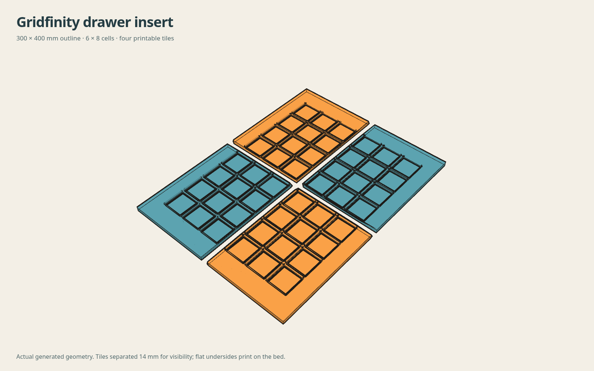
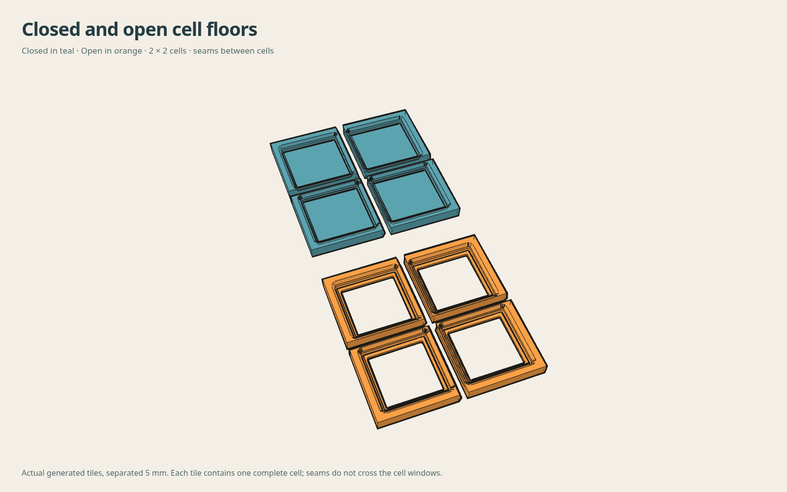

Gridfinity drawer insert generator
Set the finished outline, place a 42 mm grid inside it, and divide the insert into flat-printing tiles. Shallow V faces register adjacent tiles for CA gluing; there are no snaps, dovetails or captured connectors.
Dimensions and grid placement
Placement and cuts
Generated tiles
Loading local geometry engine…
Browser-based compute and render. Geometry is generated on your device; large inserts can take longer.
Loading…


Gluing the tiles
The default is an 0.10 mm glue gap and a 0.8 mm V depth. Start here and adjust the gap if your prints need a little more or less room. The V runs through Z and is complementary across each X or Y cut. It has no dovetail, snap or positive lock. Both tiles remain supported by the drawer floor.
Keep bins or another 42 mm reference spanning a seam while the adhesive cures. Do not simply squeeze every joint fully shut: consuming the intended glue gap shortens the grid across that seam. With no print error, the cross-seam pitch error is face-stock correction + actual bondline − assumed bondline. Positive stock increases the assembled pitch. The same correction is added at every seam in that direction and accumulates across the drawer.
For calibration, download the seam-trial recipe and load it above, or generate a 2×1 insert with one manual X cut at its center. Print both halves in the intended material and pose, check a bin spanning the seam, and measure before committing a full drawer. Keep adhesive off the bin. Repeat in Y if its measured fit differs. The plan and assembly view show nominal grid registration; they do not simulate squeezing or adhesive thickness.
Printing your insert
Each tile is a watertight, connected solid with a 1.2 mm default floor thickness and 5 mm seat region. Closed mode keeps the entire floor; Open mode has 32.5 mm rounded cell windows, with seat ledges and solid glue-edge floor strips retained. The receiver profile follows the reviewed pegboard generator; added seat clearance is independent of drawer edge padding and joint tuning. Downloads place the flat underside at Z=0. Print flat side down. The shallow joints are designed to print without supports. Use your usual filament profile.
STEP exports contain faceted solids matching the generated tile. Generation and exports run locally in your browser using Manifold. Large arrays take longer; Cancel stops the worker. The generator checks connected solids in either bottom mode, closed mesh edges and reference bin-foot interference before enabling downloads. Dimensions and assembly notes · Gridfinity reference.